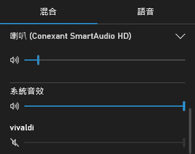

某軟體忽然沒聲音
所有軟體都很正常，偏偏只有某個軟體沒聲音，那問題可能出在 Windows 10 的 Xbox 遊戲列！這玩意兒可以調整每個影音軟體的影像與聲音，有可能我們的某個軟體被它動手腳了～
首先開啟出問題的應用軟體，並且重現沒有聲音的情況。不能只是進入軟體而已，要讓軟體明明有播放音效，只是我們聽不到。
然後按 WIN+G 鍵啟動 Xbox 遊戲列，查一下「音訊」的部分，看軟體的音效是不是被關掉了：

開啟後就恢復正常了。
大概不曉得按了什麼快捷鍵，不小心啟動 Xbox 遊戲列的關閉音效功能吧？怎麼按法我就不知道了。